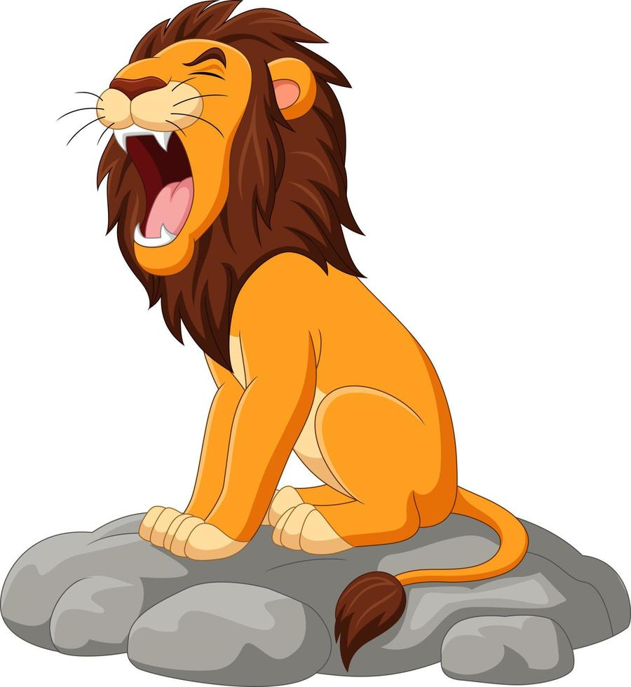
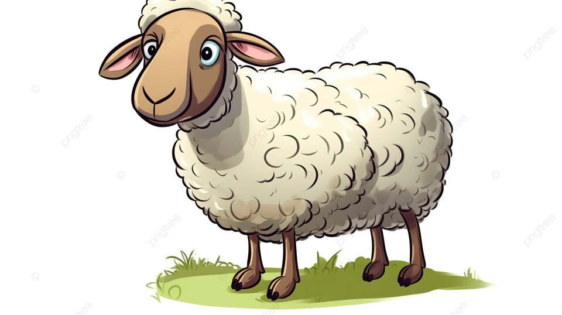
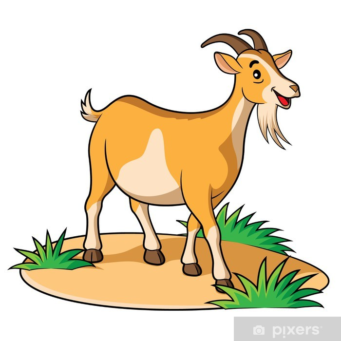
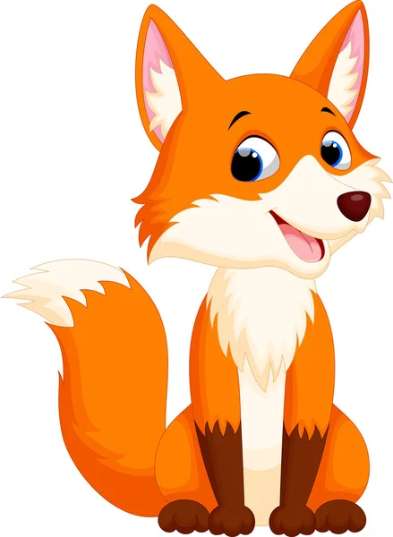

Erase una vez un león con mucha hambre que vivía en el bosque. Un buen día buscando ocasión para encontrar presa fácil que llevarse al estomago se encontró con una oveja y le preguntó que le parecía su aliento.
La oveja sin pensar mucho el riesgo o las consecuencias le respondió con sinceridad que era apestoso. Entonces el león fingió sentirse ofendido, le dio un golpe y la mató a la vez que le decía: “Por haber ofendido a tu rey, eso es lo que te has ganado” y se la comió.
Tras un rato el león volvió a hacerle la misma pregunta a una cabra que deambulaba por allí. La cabra que había visto lo que le había ocurrido a su amiga la oveja temió por su vida y le respondió que su aliento era maravilloso. El león se molestó, la mató y se la comió al tiempo que le decía “Por adularme con falsedades es lo que te mereces”.
A continuación se dirigió a la zorra que también había observado las dos situaciones anteriores y le repitió la misma pregunta. La zorra, algo más astuta viéndose venir que podía acabar como la oveja o la cabra, se alejó de él y desde la distancia le habló: “De buena fe, le informo que no puedo responder a su pregunta puesto que el resfriado que poseo me impide percibir su aliento”. Así se salvo la zorra de ser devorada por el león.
